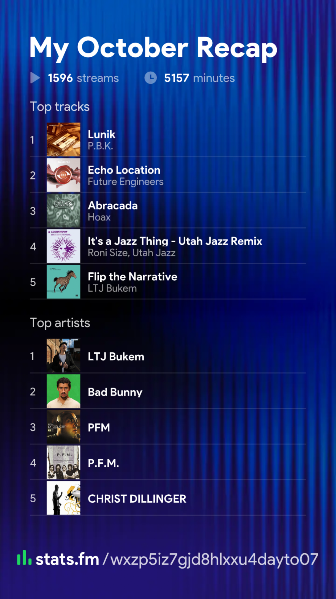

hey, My name is Charlie and this is my website. I had made this website to document my projects, hobbies, activites, and personal growth. I want to share all of the cool things that i decide/force myself to do. To add to the personal growth part, currently, Im at a point in my life where I don't really know who I am - like at all. After gowing up being very sheltered and finally moving out, I'm realizing how much of myself is still a blank slate, this goes as far as even my own identity (specifically gender, presentation, etc.). So, I've decided to document my personal growth and self discovery in journals (you can naviagate to the journals page via the nav bar) Note that this is still in a very very early stage. I'm still learning/figuring things out so please come by later.
